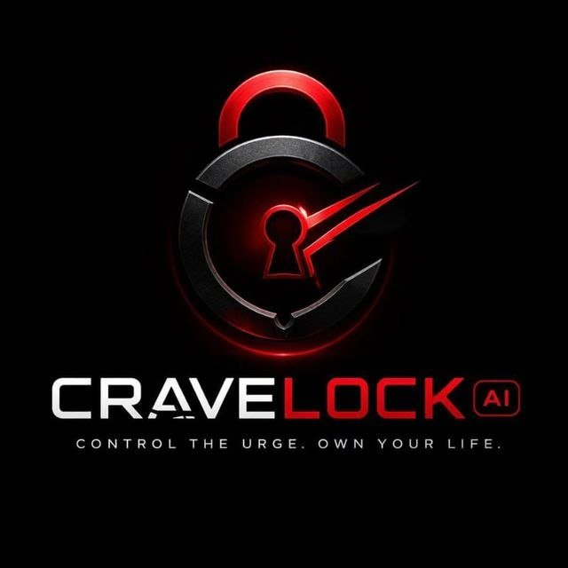

An AI-powered impulse intervention app that intercepts the moment between urge and action. It stops you before you give in, not after.
Designed for educational and self-management purposes. Not a replacement for professional medical care.
Cravelock AI is a Telegram Mini App that activates the moment you feel an urge. It walks you through a structured 90-second intervention, grounding you before you act, not after. The full loop runs inside Telegram with no login, no friction, no delay.
Every session is tracked: streak, resistance rate, trigger patterns, and a 7-day history, so the user can see their progress across time.
Most addiction and habit tools exist before or after the urge. Therapy, journals, accountability apps. None of them help during it. An urge usually peaks and fades within minutes. That window is where the decision actually happens, and it has had no dedicated tool.
Cravelock fills that window.
I built Cravelock AI from personal experience with behavioral addiction. I went looking for something that would help in the moment (during the urge, not before or after) and found nothing. That absence, not a market analysis, is what created this. The design is not theoretical. Every screen, every word, every mechanic was written from the inside of that experience.
1 user reported avoiding a relapse after using the intervention loop. Beta testing ongoing via X and Telegram communities.
Cravelock AI is the hardest product I've built. Not technically, but in terms of getting the design right. Every screen had to earn its place. The product works because of restraint: no features that don't belong in a 90-second window, no language that softens the moment, no UX that lets the user escape too easily.
Cravelock AI demonstrates designing software where timing, psychology, and interaction design matter as much as the code itself.